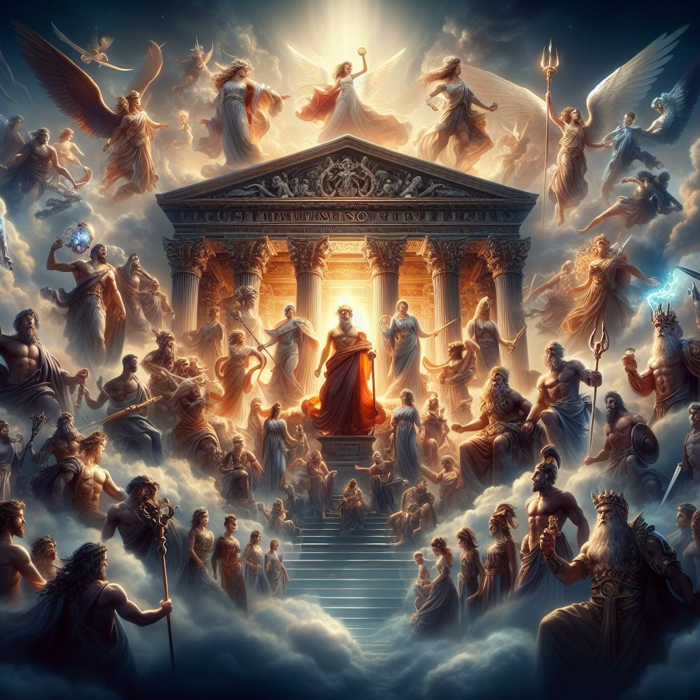

Percy Jackson e os Olimpianos" é uma série de fantasia e aventura escrita por Rick Riordan. A história é centrada em Percy Jackson, um jovem que descobre ser um semideus, filho de Poseidon, o deus do mar.
Os livros mesclam elementos da mitologia grega moderna com a vida contemporânea, criando um universo onde os deuses do Olimpo e várias criaturas mitológicas existem em segredo no mundo moderno.
Percy Jackson e uma saga de 21 livros extremamente intrigante e curiosa o primeiro livro e apaixonante e o autor descreve muito bem cada personagem o que faz com que o leitor se sinta parte da historia.
Volleybol:👇
O vôlei, também chamado de volley ou voleibol, é um esporte de origem norte-americana do século XIX. É um esporte de popularidade significativa em grande parte do mundo, e está presente em muitos torneios e eventos esportivos de âmbito internacionais, tais como os Jogos Olímpicos e os Jogos Panamericanos.
Mitologia Grega: 👇
A mitologia grega foi o conjunto de mitos e crenças que existia na cultura e na religiosidade dos gregos antigos. Os deuses do Olimpo são: Zeus, Hera, Poseidon, Atena, Ares, Deméter, Apolo, Ártemis, Hefesto, Afrodite, Hermes e Dionísio. Eles viviam no monte Olimpo, o monte mais alto de toda Grécia. Ficavam no topo, acima das nuvens. A mitologia grega diz que o portão era de nuvens, inclusive.
